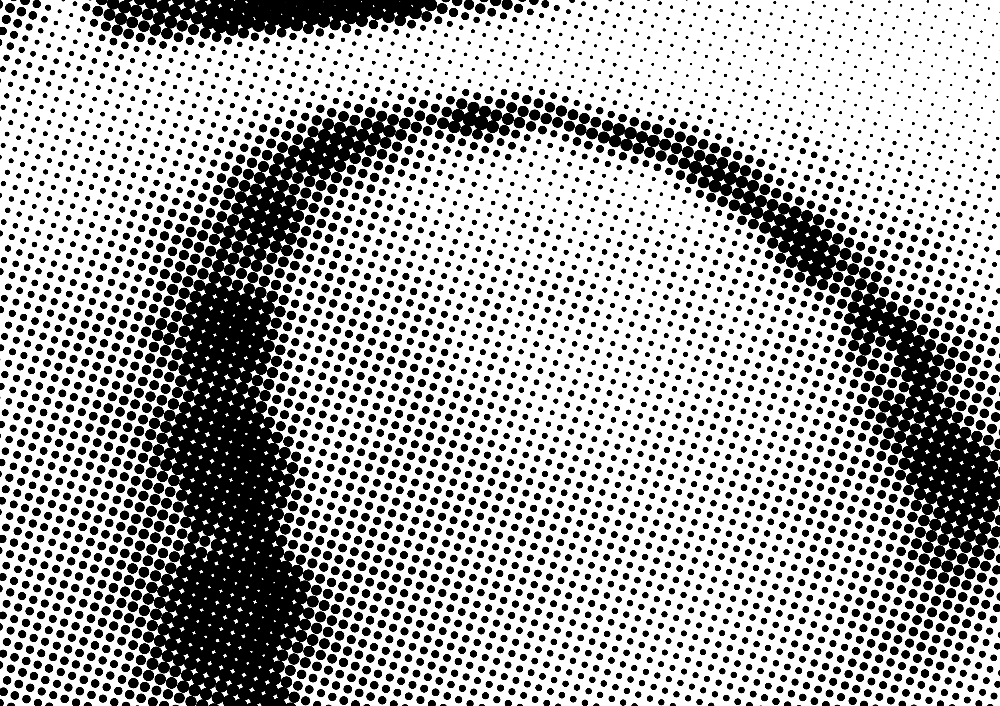
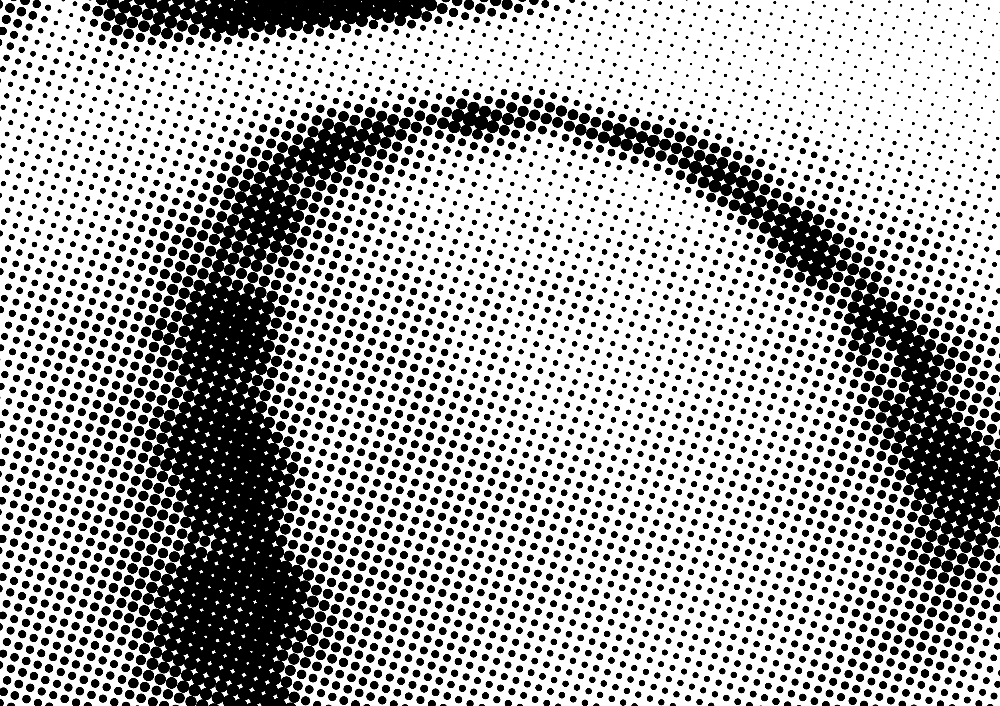
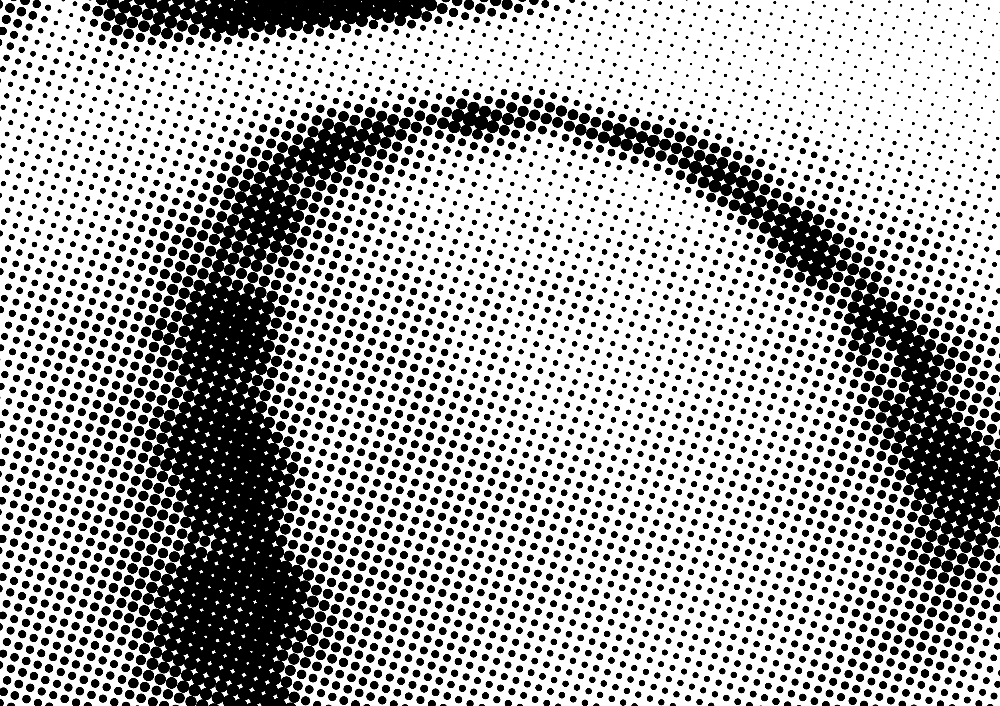

안타깝게도 ‘무사히’는 아닌 것 같다.
빠져나왔을 땐 우리 둘 다 물린 상처 하나씩 갖고 있었고,
머지않아 둘 다 좀비가 되어 어기적거릴 예정이다.
내 앞의 네가 나보다 좀더 힘들어 보인다.
다리를 물린 사람과 팔을 물린 사람의 차이일까.
감염자 하나의 탑승으로 바이러스는 기차를 완전히 점령했다.
좀비들로 가득찬 기차는 탈선하고 전복될 수밖에 없었다.
그 와중에 겨우겨우 기차에서 빠져나온 우리는 무사한가?

안타깝게도 ‘무사히’는 아닌 것 같다.
빠져나왔을 땐 우리 둘 다 물린 상처 하나씩 갖고 있었고,
머지않아 둘 다 좀비가 되어 어기적거릴 예정이다.
내 앞의 네가 나보다 좀더 힘들어 보인다.
다리를 물린 사람과 팔을 물린 사람의 차이일까.
현대 대중매체의 콘텐츠로 창작되면서 일명 '좀비물'이라는 하나의 장르를 형성하였고, 이는 오늘날 대표적인 공포·재난·포스트 아포칼립스 갈래로 손꼽히고 있다. 콘텐츠에서는 인간을 공격해 물어뜯고 바이러스를 옮겨 자신들처럼 변하게 하는 흉측한 존재로 정형화되었다. 보통 영어에서는 zombie라고 쓰는데, <좀비 2>(1979)라는 이탈리아 영화가 미국에서 개봉되면서 zombie라는 표기가 굳어진 것으로 추정된다. 사실 현대 좀비 영화의 효시라고 할 수 있는 <살아 있는 시체들의 밤>(1969)에서도 다른 명칭이 쓰였고 감독인 조지 A. 로메로도 '구울이라고 부르면 불렀지 좀비는 생각도 못 했다. '고 밝힌 바 있다. 좀비의 주요한 특징에 부합하는 괴물이, 좀비가 아닌 다른 이름으로 불리는 경우도 제법 있다. 감염자(infected)가 대표적. 서양식 좀비 개념에 익숙하지 않았던 중국에서는 비슷한 강시(僵尸)로 번역하기도 한다.